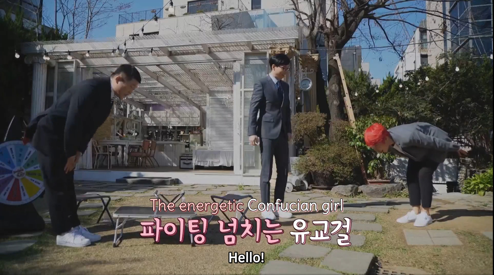

We finished Season 1 of Girls’ High Mystery Class, which was fun. The mysteries were well-designed (though, I don’t think I actually solved any of them), and it was good times to watch the characters interacting. (The players play versions of themselves as if they were mystery-solving high school students.)
There was one small meta-mystery I did solve just now, though.
The show is Korean, and English subtitles are kindly provided by Baechu Squad, a fan group that does high-quality translations. (Thanks to the Eggplant podcast for pointing me to them!)
Here’s the introduction of one of the five “PCs”, Jaejae. The narrators of Girls’ High Mystery Class (and the English subtitles) say she’s Confucian. Every so often during the rest of the season, they refer to her as Confucian again.

She did not seem Confucian! She’s the least traditional and patriarchy-bound person on the show.
So, I went back and looked at the translation and the Korean caption when she was introduced. I’m not a good reader or speaker, but I can sound stuff out, first-grader style.
Did it really say she was “The Energetic Confucian Girl” in Korean? Here’s the Korean caption:
파이팅 넘치는 유교걸
파이팅 (pa-ee-ting) is actually the English word fighting, meaning something like “go get ‘em” in that context.
넘치 (num-chee) means to spill over.
(는 (noon) is some kind of grammatic glue that’s all over the place, but I don’t know the term for it.)
So, that’s the source of the Energetic part of the translation: “spilling over with fighting”!
Now for the rest: 유교걸.
I searched for 유교 to find that it was indeed Confucianism. (If you find a Wikipedia page in a language you don’t know, you can often click a language selector in the upper right and choose one to get a version of the page from a language you do know.)
But curiously, 걸 (gul) is another English word (girl).
If you search for the whole phrase, though, you can find a Wiktionary entry for 유교걸.
유교(儒敎) (yugyo, “Confucianism”) + English girl. Originally a pun on the title of Lee Hyori’s 2008 single “U-Go-Girl (유고걸)”, whose lyrics ostensibly present the antithesis of such a woman.
So, there it is! The show was indeed calling her a Confucian girl, but they were employing two elements that create fertile conditions for translation mysteries: sarcasm and a cultural reference.